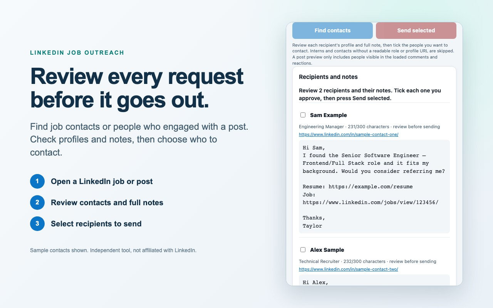

A Chrome extension for reviewing LinkedIn job contacts and post engagers before sending selected connection requests.
This is an independent tool and is not affiliated with LinkedIn.

Privacy policy